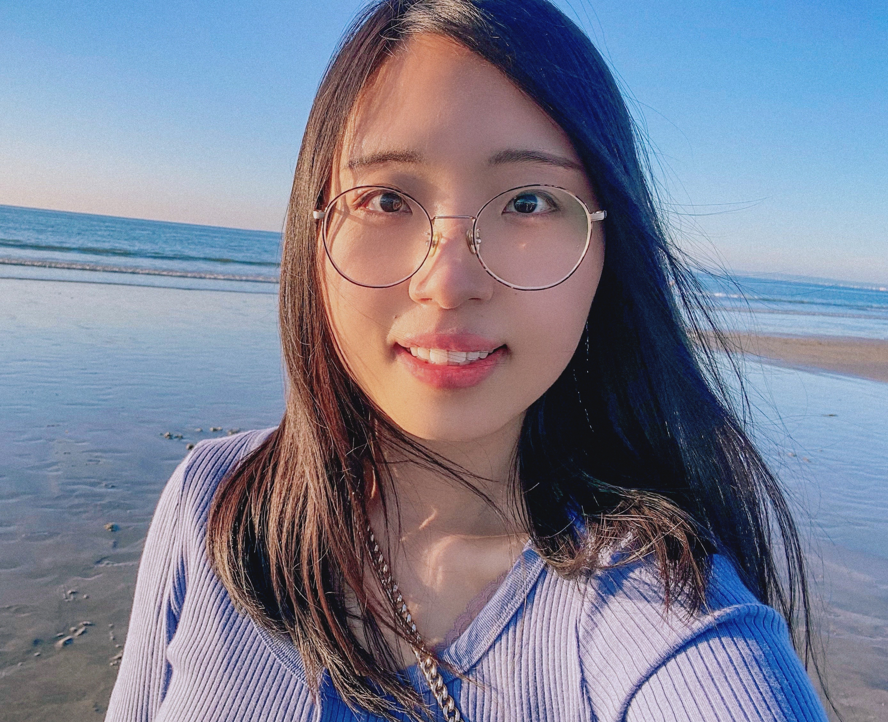
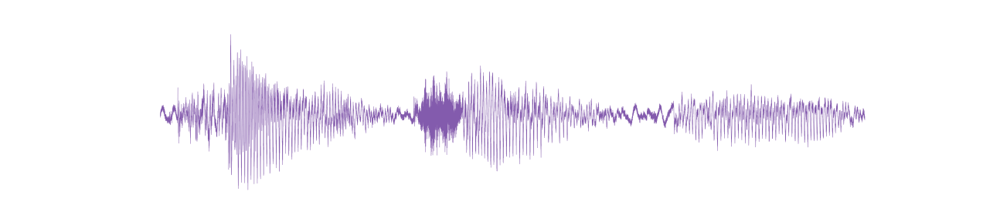

Jinyu LI

PhD in Phonetics, Phonology and Speech Science
Temporary Teaching and Research Associate (ATER)
Sorbonne Nouvelle University (Paris, France)
Postdoctoral researcher
DIPVAR project
University of Lille, France
I completed my PhD in 2023 at the Phonetics and Phonology Laboratory (LPP, CNRS/Sorbonne Nouvelle), under the supervision of Cécile Fougeron and Leonardo Lancia. Following my PhD, I worked as a postdoctoral researcher for one year within the PASDCODE project (Prosody AS a Dynamic COordinative DEvice) at LPP.
My Publications My CV My Teaching
My research focuses on the temporal aspects of speech production and control. I currently pursue two main lines of research in parallel:
I use both laboratory experimentation and large corpora of spontaneous speech in my research.
KEY WORDS:
# Speech Perception and Production
# Sensorimotor Control
# Auditory Feedback
# Phonetic Alignment
# Prosody
# Speech Rhythm
# Language Processing
# Psycholinguistics
# Speech Signal Processing
# Corpus Linguistic